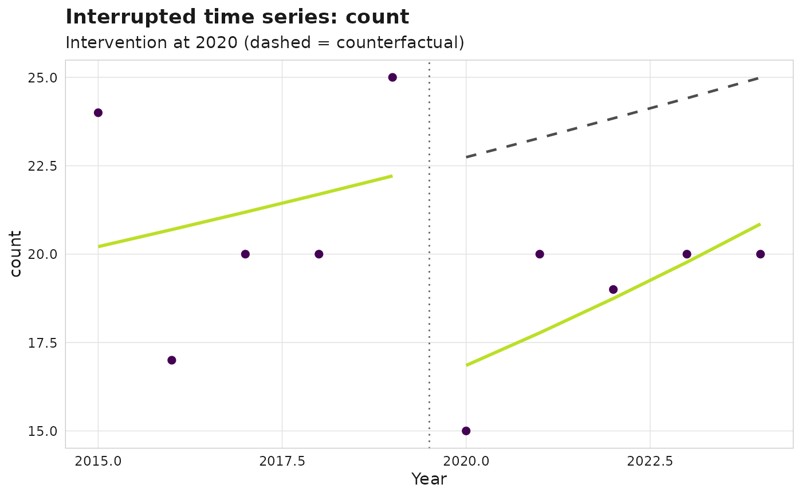

A turnkey interrupted time series (ITS): aggregates the chosen outcome to a
yearly series, fits a segmented regression with a level shift and a slope
change at intervention_year, and derives the counterfactual (the
pre-intervention trend projected forward).
Usage
sm_its(
corpus,
intervention_year,
outcome = c("count", "share_q1", "cnci", "leadership"),
family = NULL,
lag = NULL,
call = rlang::caller_env()
)
# S3 method for class 'sm_its'
print(x, ...)
# S3 method for class 'sm_its'
summary(object, ...)
# S3 method for class 'sm_its'
autoplot(object, ...)Arguments
- corpus
An
sm_corpus.- intervention_year
Integer year at which the intervention takes effect.
- outcome
One of
"count","share_q1","cnci","leadership". The expected source columns are:"count"Works per year (uses
works$year)."share_q1"Share of Q1-journal works; needs a journal-quartile column on
works(quartile,jif_quartile, orsjr_quartile)."cnci"Mean field-normalised citation impact per year. Impact is resolved from the first populated of
works$cnci, acorpus$metricstable (cnci/fnci/valuekeyed bywork_id), orworks$cited_by_count(from which FNCI is derived viasm_metric_fnci()). If none is populated, an informative error names the columns inspected."leadership"Share of works with a corresponding/leadership author (uses
authorships$is_corresponding).
- family
Optional GLM family (a
familyobject, generator function, or name). Defaults to Poisson for"count"and Gaussian otherwise; document your choice when overriding.- lag
Citation-maturity lag in years (default
2). For citation-based outcomes ("cnci"), the most recentlagyears are citation-immature and are excluded from the fit; this is reported in the print method.- call
Caller environment for error reporting.
- x
An
sm_itsobject.- ...
Ignored.
- object
An
sm_itsobject.
Value
An sm_its S3 object with components: model (the fitted glm),
coefficients (tidy tibble: term, estimate, std.error, conf.low,
conf.high, statistic, p.value), series (tibble: year,
observed, fitted, counterfactual), and metadata (outcome,
intervention_year, family, lag, provisional_years).
print returns x invisibly.
summary returns the tidy coefficient tibble.
autoplot returns a ggplot.
See also
sm_did(), sm_citation_maturity()
Other causal:
sm_did(),
sm_synth()
Examples
corpus <- sm_example_corpus(n_works = 200, seed = 1)
its <- sm_its(corpus, intervention_year = 2020, outcome = "count")
its
#>
#> ── <sm_its> ────────────────────────────────────────────────────────────────────
#> Outcome: count Family: poisson
#> Intervention year: 2020
#>
#>
#> ── Segmented regression coefficients
#> Baseline level: 3.0063 [2.6712, 3.3413] (p = <2e-16)
#> Pre-trend (slope): 0.0236 [-0.1111, 0.1583] (p = 0.73)
#> Level change: -0.2997 [-0.8709, 0.2714] (p = 0.3)
#> Slope change: 0.0297 [-0.1669, 0.2262] (p = 0.77)
# \donttest{
ggplot2::autoplot(its)

# }